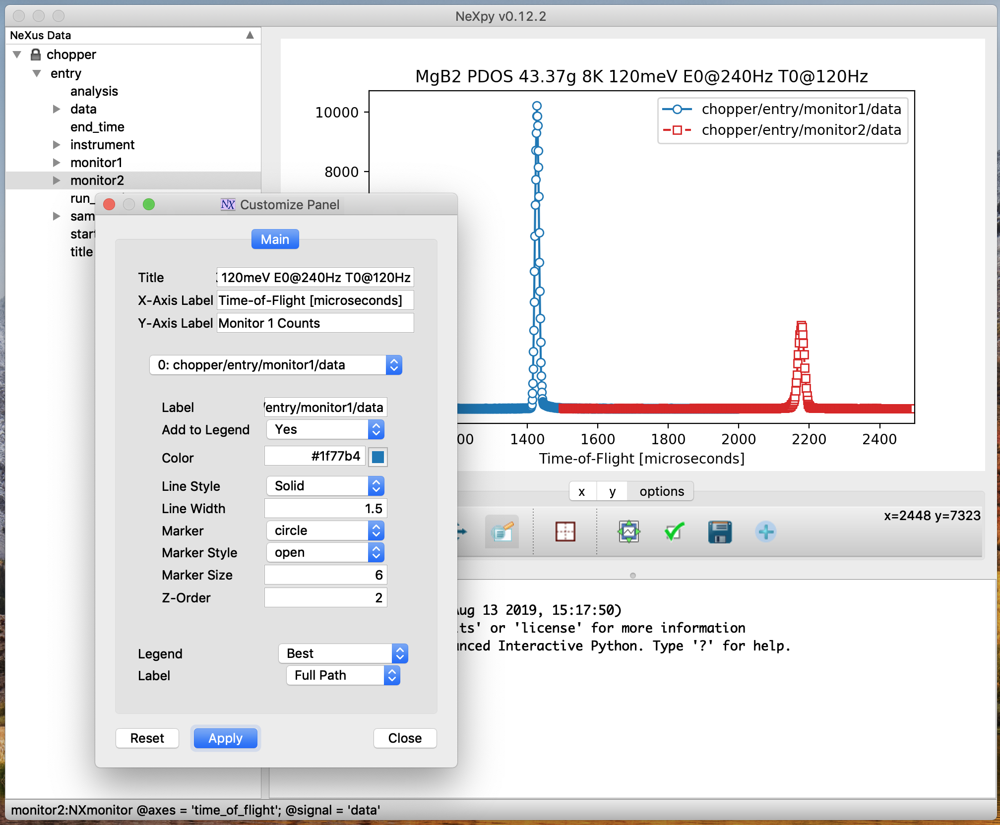
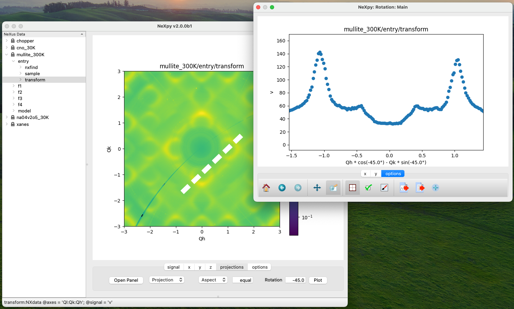
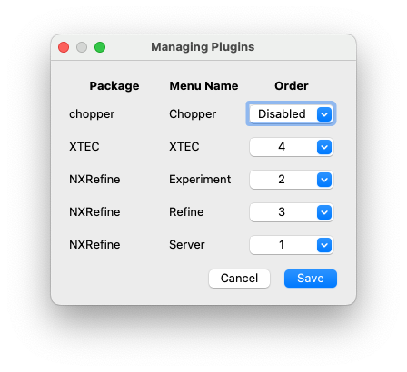

Python Graphical User Interface¶
A PyQT GUI has been created to make it easier to keep track of the loaded NeXus files and the results of any subsequent analysis. It is invoked from the command line by:
> nexpy
Note
This assumes that the Python ‘bin’ directory is in your standard shell path.

The illustration shows the main features of the GUI:
- 1) Tree Pane
This contains the tree structure of NeXus or HDF5 files opened in the File menu, non-NeXus files that have been imported and converted into the NeXus format using one of the NeXus readers, and NXroot, NXentry, or NXdata groups added from the shell. Various actions on the data can be performed by right-clicking a tree item, include plotting, renaming, fitting and deleting the data.
- 2) Plot Pane
This contains plots produced by (a) the Data:Plot Data menu item, which operates on the NeXus data selected in the tree, (b) double-clicking on NeXus data in the tree, or (c) using NeXus data
plotmethods from the shell. If an NXdata, NXmonitor, or NXlog group is plotted, the rank, dimensions, and plotting axes are determined automatically. If the rank of the data is greater than two, a two-dimensional slice is extracted from the data. The GUI allows the selection of alternative slices using one of the axis panels (see below). If an NXfield is selected, the axes can be chosen from other NXfields in the same group. It is possible to open other plot windows and switch between them using the Window menu or keyboard shortcuts (see below).- 3) Shell Pane
This is an IPython shell, with NeXpy already imported (as * so no prefixes are necessary), along with NumPy (as ‘np’), Pyplot (as ‘plt’), and Matplotlib (as ‘mpl’). Any assignments to items in the tree pane are automatically reflected in the tree pane, and new NXroot or NXentry objects can be added to the tree from the IPython shell. NeXus data plots commands from the shell will appear in the plot pane, and Matplotlib commands can be used to modify the plot characteristics. The shell has enhanced features such as autocompletion of NeXus dictionaries and attributes and tooltips containing module docstrings when you open the module parentheses.
- 4) Axis Panels
The tabbed panels below the plot can be used to modify the plots. The number of panels depends on the rank of the original data. The ‘signal’, ‘x’ and ‘y’ panels have text boxes and sliders for adjusting the plotting limits. For rank two or more, a projection panel allows the plotting of projections along different directions, using the current axis limits. For ranks greater than two, a ‘z’ panel allows the other dimensions to be varied. Finally, the ‘options’ panel provides access to the a number of tools for modifying the plot and saving/exporting the plotted data.
- 5) Status Bar
The values and attributes of the currently selected item in the tree are displayed in the status bar.
- 6) Tooltips
The NeXus tree structure of an item in the tree pane will be displayed as a tooltip when the cursor hovers over it.
NeXpy Menu Bar¶
{kind=link}
Window Menu¶
- Show Tree
Brings the tree view to the front and give it keyboard focus.
Note
This has the keyboard shortcut of Ctrl+Shift+T (⌘+⇧+T on a Mac).
- Show IPython Shell
Brings the shell to the front and give it keyboard focus.
Note
This has the keyboard shortcut of Ctrl+Shift+I (⌘+⇧+I on a Mac).
- Show Log File
Opens a text window displaying the NeXpy log file(s). These files, which are stored in
~/.nexpy/nexpy.log,~/.nexpy/nexpy.log.1, etc., records operations on the tree items, as well as comprehensive tracebacks of exceptions in both the GUI and the IPython shell. Only one-line summaries are displayed in the shell to improve readability.Note
The log files contain ANSI markup to colorize the text, which can be rendered in the terminal using
less -r.- Show Script Editor
Shows the script editor. If multiple scripts are open, they are displayed as tabs in a single window. If no scripts are open, this will open a new script.
- Show Customize Panel
This opens a panel for the currently active plotting window that allows aspects of the plot, such as titles, axis labels, aspect ratios, skew angles, marker and line colors, and legends to be customized. All the open panels are displayed as tabs in a single window.
Note
This is equivalent to clicking the Edit button in the Options Tab.
- Show Limits Panel
This opens a panel for the currently active plotting window that allows the axes and axis limits of the currently active plot to be changed, as well as the plot size on the screen. All the panels are displayed as tabs in a single window, with the option of copying and values from one tab to the other if the plots are compatible. If the ‘sync’ button is checked, the limits will be synchronized dynamically to any changes made to the other plot, whether made on the Limits Panel or directly in the plot. Multiple plots can be synchronized to a single plot.

Note
When the settings in one tab are copied to another and the Apply button is clicked, other settings, such as the aspect ratio, skew angle, color map, and log settings are also copied. This is therefore a very quick way of making direct comparisons between different data sets.
Note
The plotting pane in the main window cannot be resized this way, because of the constraints of the other tree and shell panes. Other plotting windows will copy the main window plotting size if requested.
- Show Projection Panel
This opens a panel for the currently active plotting window to allow projections along arbitrary axes to be plotted and/or saved. The projections are either two-dimensional or, if the y-box is set to ‘None’, one-dimensional. The projections may be plotted in a separate window, using the ‘Plot’ button or saved to a scratch NXdata group on the tree. If ‘Sum’ is checked, the projection contains the sum over all the summed pixels; if not, the projection contains the average, i.e., the sum divided by the number of pixels in each orthogonal dimension. If a one-dimensional projection is plotted, a checkbox appears allowing additional one-dimensional projections to be plotted over it.
The x and y limits of the plot are displayed as a dashed rectangle, which can be hidden if ‘Hide Limits’ is checked. Dragging with the right-button depressed can be used to change the limits without replotting.
Note
On systems without a right mouse button, right-click dragging can usually be accomplished by other means, e.g., two-finger drags on a trackpad or dragging with the [Ctrl]-key depressed.
All the open projection panels are displayed as tabs in a single window, with the option of copying projection values from one tab to the other if the plots are compatible.

Note
The projection panel can also be used to mask and unmask data within the dashed rectangle. See Python Interface to NeXus for descriptions of masked arrays.
- Show Scan Panel
This opens a panel for plotting data across multiple files in the NeXpy tree. The limits are used to define projection of the currently plotted data, which is to be plotted against the variable defined by the path in the Scan field. This path can either be entered manually, or by selecting a scalar quantity in the tree and clicking the ‘Select Scan’ button. The ‘Select Files’ button is then used to define the loaded files to be included in the scan. Values of the scanned variable are automatically read from the file and entered in the box by the corresponding file, where they can be edited if necessary.

- Show All Limits
This opens the limits panel for every open plot window.
- Reset Plot Limits
This restores the axis and signal limits to the original values.
Note
This is equivalent to clicking on the Home button in the Options Tab (see below). Right-clicking within the plot restores the axis limits but does not reset the signal limits.
- New Plot Window
Opens a new NeXpy plotting window, consisting of a Matplotlib plot pane and its associated axis panels. NeXpy plot commands will be directed to the currently active window. Clicking on the plot pane makes it active. All open windows are listed in the Window menu, along with their labels (‘Main’, ‘Figure 1’, ‘Figure 2’, etc.). These are used to switch the focus for subsequent plots.
Note
If Matplotlib windows are opened from the IPython shell using the standard Pyplot commands, e.g.,
plt.figure(), they are numbered independently and will not be added to the NeXpy menu. They can be modified using the standard Pyplot commands.- Close Plot Window
Closes the currently active NeXpy plot window.
- Equalize Plot Sizes
All plot windows are resized to match the main window.
- Cascade Plots
Repositions all open NeXpy plot windows to cascade from the upper left corner of the screen to the lower right. This does not apply to special windows, such as the Projection, Fit, and Rotation windows.
- Tile Plots
Tiles all open NeXpy plot windows in a grid starting at the upper left corner moving from left to right, adding extra rows as necessary. This does not apply to special windows, such as the Projection, Fit, and Rotation windows.
- Main, Figure 1, Figure 2…
These menu items set the selected plotting window to be active. As new windows are created, they are dynamically added to this list.
{kind=link}
Adding NeXus Data to the Tree¶
NXroot groups that are displayed in the tree pane are all children of a group of class NXtree, known as ‘tree’. If you create a NeXus group dynamically in the IPython shell, it can be added to the tree pane using the tree’s add method:
>>> a=NXroot()
>>> a.entry = NXentry()
>>> nxtree.add(a)
If the group is an NXroot group, it will have the name used in the shell. If the group is not an NXroot group, the data will be wrapped automatically in an NXroot group and given a default name that doesn’t conflict with existing tree nodes, e.g., w4.
Note
The NXroot class is still considered to be the root of the NeXus tree in shell commands. The NXtree group is only used by the GUI and cannot be saved to a file.
Warning
In Python, an object may be accessible within the shell with more than one name. NeXpy searches the shell dictionary for an object with the same ID as the added NeXus object and so may choose a different name. The object in the tree can be renamed.
Plotting NeXus Data¶
NXdata, NXmonitor, and NXlog data can be plotted by selecting a group on the tree and choosing “Plot Data” from the Data menu or by double-clicking the item on the tree (or right-clicking for over-plots). Below the plot pane, a series of tabs allow manipulation of the plot limits and parameters using text boxes and sliders.
Note
The slider ranges are initially set by the data limits. You can redefine the slider ranges by editing their respective minimum and/or maximum text boxes. The original range can be restored by clicking on the Home button in the Options Tab or right-clicking within the plot.
Signal Tab

The signal tab contains text boxes and sliders to adjust the intensity limits, a checkbox to plot the intensity on a log scale, and two dropdown menus to select a color palette and a 2D interpolation method.
The color palettes are divided into three sections, separating perceptually uniform palettes at the top, miscellaneous palettes, and diverging palettes at the bottom. See the Matplotlib documentation for more details.
If a diverging color scale is used, the signal is assumed to be symmetric about 0, so the minimum box and slider are disabled and their values set to the negative of the maximum values. If a log scale is chosen, a symmetric log plot is displayed, with threshold and scale parameters adjustable using the command-line symlog command (see below).
Note
For a one-dimensional plot, there is no signal tab. The intensity is adjusted using the y-tab. There is also no signal tab for an RGB(A) image, since the colors are defined by the RGB(A) values.
Note
The interpolation methods are the default options provided by Matplotlib, which are only available for 2D data with a regular grid.
Note
If the astropy module is installed, the interpolation dropdown menu includes a convolve option. Strictly speaking, this is not an interpolation method, since it performs a Gaussian smoothing of the data, with a standard deviation set by the smooth option (see below). The default is 2 pixels.
X Tab

The x and y-tabs contains text boxes and sliders to adjust the axis limits and a dropdown menu to select the axis to be plotted along x or y, respectively. The names correspond to the axis names in the NXdata group. A checkbox allows the direction of the axes to be flipped.
Warning
Flipping the axis directions does not flip the direction of the sliders.
Y Tab

The y-tab has three additions to the features in the x-tab:
Since multiple one-dimensional data sets can be plotted on the same figure, an additional pull-down menu is added on the left-hand side to select them.
Selecting the ‘smooth’ checkbox adds a line that smoothly interpolates one-dimensional data. This uses the SciPy interp1d function. This option is provided to add guides-to-the-eye, and should be used for numerical analysis with caution.
The ‘Fit’ button will open a panel for fitting the data using the LMFIT package.
See also
Z Tab

If the data rank is three or more, the 2D plot vs x and y is a projection along the remaining axes. The z-tab sets the limits for those projections. It contains a dropdown menu for selecting the axis to be averaged or summed over and two text boxes for selecting the projection limits. When the data are first plotted, only the top slice if plotted, i.e., all the z-axis limits are set to their minimum value.
Note
Projections are now averaged over the summed bins by default. To restore the previous behavior, click the ‘Sum’ checkbox in the Projection Tab.
When ‘Lock’ is checked, the difference between the limits of the selected z-axis is fixed. This allows successive images along the z-axis to be plotted by clicking the text-box arrows in increments of the difference between the two limits. If you use the text-box arrows or the terminal arrow keys to change the z-limits when they are locked together, the new plot is updated automatically. Otherwise, the data is only replotted when you force a replot using the toolbar (see below).
Note
Make sure that the value of both limit boxes is entered, e.g., by pressing return after editing their values, before clicking on the ‘lock’ checkbox.
When stepping through the z-values, the ‘Autoscale’ checkbox determines whether the plot automatically scales the signal to the maximum intensity of the slice or is set to the current signal limits.
Note
When ‘Autoscale’ is checked, it is not possible to adjust the limits in the Signal Tab.

The toolbar on the right provides further controls for replotting data as a function of z. The first button on the left forces a replot, e.g., when you have changed z-axis limits or turned on auto-scaling. The other buttons are for stepping through the z-values automatically, with ‘back’, ‘pause’, and ‘forward’ controls. The default speed is one frame per second, but after the first click on the play button, subsequent clicks will reduce the frame interval by a factor two.
Projection Tab

The projection tab allows the Projection, Limits, and Scan panels to be opened. The aspect ratio and skew angle can be defined and a new plot window opened containing the currently plotted two-dimensional data rotated at an arbitrary angle. This allows projections to be applied along non-orthogonal axes.
Note
For a quick view of rotated data, arbitrary one-dimensional cuts through the current two-dimensional plot can be plotted in a new window by dragging along the required line with the Shift key depressed. Subsequent cuts will be overplotted in this window until it is closed.
{kind=link}
Options Tab

The options tab is based on the standard Matplotlib toolbar, with the the addition of extra buttons. From left to right, the buttons are:
Home - restores all plotting limits to their original values.
Arrows - cycles through the limits of previous plots.
Pan - enables panning mode (disabling zoom mode).
Zoom - enables zoom mode (disabling pan mode).
Aspect - toggles between setting the aspect ratio automatically to fill the available space or setting the x and y scales to be equal. This is only valid if the units of the x and y axes are identical.
Edit - opens the Customize Panel to edit both image and point plots. Use this to change the title and axis labels, modify the image aspect ratio and skew angles, turn axis grids on or off and set their styles, modify the point plot markers and lines, scale or add an offset to 1D plots, and draw legends.
Modify - opens the Style Panel that allows the labels and font sizes of the plot to be adjusted dynamically. The plot margins can also be changed from the Matplotlib defaults.
Save - saves plot to PNG file.
Export - exports plotted data to a NeXus file or, for one-dimensional data, a multi-column ASCII file.
Add - adds plotted data to the tree pane as an NXdata group within the scratch workspace ‘w0’.
On the far right of the toolbar, the data and axis values are dynamically updated to the values under the current mouse location.
See also
See the Matplotlib documentation for more detailed descriptions of the standard toolbar, including keyboard shortcuts. The ‘Aspect’, ‘Export’, and ‘Add’ buttons are unique to NeXpy.
Note
The aspect ratio of a plot can also be set from the IPython shell. See below.
Command Line Options
It is possible to modify some of the plotting features from the IPython shell. The current plotting pane, the default Matplotlib axis instance, and the current image are exposed as
plotview,plotview.ax, andplotview.image, respectively.Note
Before making any changes, make sure that you have selected the right plotting pane, either by selecting it in the Window menu or using one of the keyboard shortcuts, which are displayed in the menu, e.g., <Ctrl> +2 (⌘+2 on a Mac) to select Figure 2.
Set Aspect Ratio:
>>> plotview.aspect = <aspect>
<aspect>can be any of the values allowed by the Matplotlib set_aspect function, i.e., ‘auto’, ‘equal’, or the numerical value of the ratio between the height and the width (if the units are identical). The ‘Aspect’ button (see above) toggles between ‘auto’ and ‘equal’. This can also be set using the ‘Edit Parameters’ button on the Options tab.Set Skew Angle:
>>> plotview.skew = <angle>
This sets the angle between the x and y-axes in degrees. If set to
None, the axes are plotted as orthogonal. Ifplotview.aspectis currently set to ‘auto’, this command will automatically set it to 1.0 (equivalent to ‘equal’), i.e., assuming the units of the x and y-axes are the same. If they are not,plotview.aspectshould be set to the ratio of their units. This can also be set using the ‘Edit Parameters’ button on the Options tab.
{kind=link}
Set Smoothing Width:
>>> plotview.smooth = <stddev>
This sets the standard deviation in pixels for the Gaussian smoothing of the data performed when the ‘convolve’ option is selected in the Signal tab. The default value is 2.
Set Offsets:
>>> plotview.offsets = <True|False>
If the range of an axis is much smaller than the absolute values, the axis labels can overlap. Setting this option will determine whether Matplotlib converts the axis labels to differences from a fixed offset value or not. The default is
False.Select Color Map:
>>> plotview.cmap = <cmap>
This allows the color map of the currently displayed image to be changed. This can be useful if the map is not available in the Signal Tab. See the Matplotlib documentation for more details.
Draw Shapes:
>>> plotview.vline(<x>, <ymin>, <ymax>) >>> plotview.hline(<y>, <xmin>, <xmax>) >>> plotview.vlines(<x-array>, <ymin>, <ymax>) >>> plotview.hlines(<y-array>, <xmin>, <xmax>) >>> plotview.crosshairs(<x>, <y>) >>> plotview.rectangle(<x>, <y>, <dx>, <dy>) >>> plotview.circle(<x>, <y>, <radius>) >>> plotview.ellipse(<x>, <y>, <dx>, <dy>)
These functions draw graphical primitives on the plot using the axis coordinates. In the case of the lines, the complete range of the plot will be used if the minimum and maximum values are omitted. The rectangle coordinates represent the lower left-hand corner but the circle and ellipse coordinates represent the shape center.
Note
Since the arguments are in the units of the axes, the circle will only be truly circular if the x and y units are the same, and the aspect ratio of the plot is equal.
All of the functions will accept additional keyword arguments used in drawing Matplotlib shapes, e.g., to change the edge and fill colors, line properties, etc. See the Matplotlib documentation for more details.
Draw Grid:
>>> plotview.grid(True|False)
Draws grid lines at the major tick values. Additional keyword arguments can be given to modify the color, linestyle, etc, using the standard Matplotlib conventions.
Draw Legend:
>>> plotview.legend(*items, *opts)
This draws a legend using the standard Matplotlib API, i.e., it is broadly equivalent to calling
plotview.ax.legend(). It is only intended to be used for one-dimensional plots. By default, the labels will contain the full path to each plotted field, but setting the keyword argument,nameonly=Truewill restrict the label to the field name.Note
Legend labels, positions, and other attributes can be modified in the Customize Dialog.
Convert to Symmetric Log Plot:
>>> plotview.symlog(linthresh, linscale, vmax)
Plot the data using symmetric logarithms for both positive and negative data. The
linthreshandlinscaleparameters are used to define the linear region interpolating between the positive and negative log regions. See the Matplotlib documentation for more details. The maximum and minimum signal values are set to +/- vmax.Calling
symlogwill set thelinthreshandlinscaleparameters for future plots. Call it without any parameters to set them to their default values,linthresh=vmax/10andlinscale=0.1.Note
There are a number of diverging color maps, such as
coolwarm, that are ideal for displaying symmetric log data. Some are available at the bottom of the color map dropdown menu in the Signal tab.
Keyboard Shortcuts
A number of keyboard shortcuts are defined when focus is on the plotting window. These can be used to switch between tabs or set various plotting options.
Note
Keyboard focus can be switched to a particular plotting window by (a) clicking within the window, (b) using the Window menu, or (c) typing Ctrl+’n’ (⌘+’n’ on a Mac), where ‘n’ is the plot window number.
s - switch to the Signal tab.
x - switch to the X tab.
y - switch to the Y tab.
z - switch to the Z tab.
p - switch to the Projection tab.
o - switch to the Options tab.
l - toggle logarithmic signal scale (2D plots only).
g - toggle display of major and minor grid.
G - toggle display of major grid.
P - toggle panning mode (if enabled, zoom mode is disabled).
Z - toggle zoom mode (if enabled, pan mode is disabled).
E - toggle the aspect ratio between ‘equal’ and ‘automatic’.
S - save plot to a graphics file.
A - add plotted data to the tree pane.
O - open dialog to customize plots.
Configuring NeXpy¶
When NeXpy if first launched, a private directory is created in the home directory, ~/.nexpy/. This is used to store log files, backups, plugins, and scripts. A configuration file, ~/.nexpy/config.py, is created to contain Python commands that should be run at the start of every session.
By default, the configuration file contains a number of imports, including all the functions and classes defined by the nexusformat package.
import nexpy
import nexusformat.nexus as nx
from nexusformat.nexus import *
This file could also be used to change the default parameters used by the nexusformat package to define, e.g., memory limits, maximum loaded array sizes, file locking, default HDF5 compression, and default string encodings. See Python Interface to NeXus for more details.
For convenience, the configuration file also imports a number of other modules that are commonly used:
import sys
import os
import h5py as h5
import numpy as np
import numpy.ma as ma
import scipy as sp
import matplotlib as mpl
from matplotlib import pylab, mlab, pyplot
plt = pyplot
If you require a different set of imports or prefer alternative abbreviations, edit the configuration file using``Open Startup Script…`` in the Script Menu.
Fitting NeXus Data¶
NeXpy makes it easy to fit one-dimensional data using the LMFIT package, with a ‘Fit’ button in the Y-Tab of every one-dimensional plot.
Note
If multiple data sets are plotted in the same window, the one to be fit can be selected using the pull-down menu on the far left of the Y-Tab. Multiple data sets can be selected for fitting at the same time, each one opening a new tab in the Fit Panel. Line plots of the models and their components will be plotted in the same color as the corresponding data.
Alternatively, choosing ‘Fit Data’ from the Data menu or using the keyboard shortcut Ctrl+Shift+F (⌘+⇧+F on a Mac), will fit data selected in the Tree Pane.
Either method opens a dialog window that allows multiple fit models to be combined, with the option of fixing or limiting parameters. To help in selecting a model, click on the pull-down menu and the model description will be displayed as a tooltip when you hover over it.

The fit can be plotted, along with the constituent models in the main plotting window and the fitting parameters displayed in the Fit Panel.
Note
The data are only fitted within the x-limits of the current plot. This can be used, for example, to perform piece-wise fits of multiple peaks before a final fit that combines them all together.
Initializing Parameters¶
LMFIT models often define a function to guess initial parameters from the data. If multiple peaks are to be fitted, sensible starting parameters for each one can be determined by moving the x-limits to cover a single peak when adding the peak model. Then, the x-limits can be restored before fitting all the peaks together.
Masking Data¶
Data points can be masked so that they are excluded from the fit. Individual points can be removed by double-clicking on the point marker. A set of x-values can be excluded by right-click dragging over the required range and then clicking on ‘Mask Data’. Masks can be cleared by clicking on ‘Clear Masks’.
Modifying Constraints¶
Parameters can be fixed or constrained with minimum and maximum limits in the Fit Panel. However, LMFIT also allows parameters to be bound to the values of one or more other parameters by algebraic expressions. These expressions can be defined or modified by clicking on ‘Σ’ button at the end of the parameter row. Pull-down menus allow parameters from any of the currently added models to be inserted into these expressions.
Composing Models¶
When models are added using the ‘Add Model’ button, they are combined to produce a composite model, in which they are added together by default. However, LMFIT allows composite models to be combined using different operators (add, subtract, multiply, and divide), defined by an algebraic expression. For example, a BoseFactor model, with temperature its only parameter, is provided by NeXpy. If it is combined with a peak model, using the ‘multiply’ operator, it will apply a detailed balance factor appropriate for modeling quasielastic neutron scattering.
A ‘Compose Model’ button allows the algebraic expression combining the currently added models to be edited.
It is also possible to combine a subset of models when plotting the fitted models, by selecting ‘Composite Model’ before clicking ‘Plot Model’. This allows, for example, several functions representing a background to be combined before they are plotted.
See also
Saving the Fit¶
The original data, the fitted data, the constituent models, and their
parameters can all be saved to an NXprocess group in the Tree Pane using
the ‘Copy Fit’ or ‘Save Fit’ buttons. If the ‘Copy Fit’ button is used,
the NXprocess group can be pasted into any group in the tree that is
unlocked. If the ‘Save Fit’ button is used, the group is saved to the
scratch group, w0 and named f1, f2, etc.
If the NXprocess group is selected in the tree, it can be loaded into
a new fit panel for further refinement. If new data is being fitted, a
Import Model button allows the parameters of an earlier fit to be
loaded when its corresponding NXprocess group is selected in the tree.
Closing the Fit Panel¶
If the Fit Panel was opened by clicking the ‘Fit’ button in Y-Tab, line plots of the models and their components are superposed on the existing plot window. These line plots will be erased when the corresponding tab in the Fit Panel is closed. However, if the ‘Apply’ button is clicked before closing the tab, the line plot representing the combined model will be preserved until the plot window is closed.
Defining a Model¶
NeXpy makes available any of the models currently supplied by the LMFIT package, as well as a couple of extra models added to the NeXpy package, the OrderParameterModel and the PDFdecayModel. If you wish to construct your own model, please refer to the LMFIT documentation for more details.
User-defined models can be added as separate files to their private
models directory in ~/.nexpy/models (new to v0.12.6). As an example,
here is the code for the OrderParameterModel that is distributed with
NeXpy:
import numpy as np
from lmfit.model import Model
class OrderParameterModel(Model):
r"""A model to describe the temperature dependence of an order parameter
with three Parameters: ``amplitude``, ``Tc``, and ``beta``.
.. math::
f(x; A, Tc, \beta) = A ((Tc - x[x<Tc])/ Tc)^\beta
where the parameter ``amplitude`` corresponds to :math:`A`, ``Tc`` to
:math:`Tc`, and ``beta`` to :math:`\beta`.
"""
def __init__(self, **kwargs):
def op(x, amplitude=1.0, Tc=100.0, beta=0.5):
v = np.zeros(x.shape)
v[x<Tc] = amplitude * ((Tc - x[x<Tc])/ Tc)**beta
v[x>=Tc] = 0.0
return v
super().__init__(op, **kwargs)
def guess(self, data, x=None, negative=False, **kwargs):
"""Estimate initial model parameter values from data."""
return self.make_params(amplitude=data.max(), Tc=x.mean(), beta=0.33)
Warning
Prior to v0.12.6, NeXpy defined its own system for generating fitting functions. In v2.0.0, this system is no longer supported. Legacy functions should be converted into valid LMFIT models.
Importing NeXus Data¶
NeXpy can import data stored in a number of other formats, including SPEC files, TIFF images, and text files, using the File:Import menus. If a file format is not currently supported, the user can write their own. The following is an example of a module that reads the original format and returns NeXus data:
def get_data(filename):
from libtiff import TIFF
im = TIFF.open(filename)
z = im.read_image()
y = range(z.shape[0])
x = range(z.shape[1])
return NXentry(NXdata(z,(y,x)))
This could be run in the shell pane and then added to the tree using:
>>> nxtree.add(get_data('image.tif'))
Existing Readers¶
NeXpy is currently distributed with readers for the following format:
SPEC Files
This reader will read multiple SPEC scans from a single SPEC log file, creating a separate NXentry for each scan. All the columns in each scan are read into the NXdata group, with the default signal defined by the last column. Mesh scans are converted to multi-dimensional data, with axes defined by the scan command. It is possible to plot different columns once the scans are imported.
TIFF Images
This reader will import most TIFF images, including those with floating
point pixels. This currently uses the tifffile module. Use the Open
Image... dialog to use the FabIO library.
Image Stack
This reader will read a stack of images, which are readable by FabIO, e.g., TIFF or CBF, into a three-dimensional NXdata group. The image stack must be stored in separate files in a single directory, that are grouped with a common prefix followed by an integer defining the stack sequence.
Text Files
This reader will read ASCII data stored in two or three columns, containing the x and y values, and, optionally, errors. One or more header lines can be skipped. A more flexible text importer, allowing the selection of data from multiple columns, is under development.
Defining a Reader¶
It is possible to add a reader to the File:Import menu using the
existing samples as a guide in the nexpy.readers directory. User-defined
import dialogs can be added to their private readers directory in
~/.nexpy/readers or installed in third-party packages that have the
nexpy.readers entry point defined.
Here is an example of an import dialog:
"""
Module to read in a TIFF file and convert it to NeXus.
Each importer needs to layout the GUI buttons necessary for defining
the imported file and its attributes and a single module, get_data,
which returns an NXroot or NXentry object. This will be added to the
NeXpy tree.
Two GUI elements are provided for convenience:
ImportDialog.filebox: Contains a "Choose File" button and a text
box. Both can be used to set the path to the
imported file. This can be retrieved as
string using self.get_filename().
ImportDialog.close_buttons: Contains a "Cancel" and "OK" button to
close the dialog. This should be
placed at the bottom of all import
dialogs.
"""
import numpy as np
from nexusformat.nexus import *
from nexpy.gui.importdialog import NXImportDialog
filetype = "TIFF Image" #Defines the Import Menu label
class ImportDialog(NXImportDialog):
"""Dialog to import a TIFF image"""
def __init__(self, parent=None):
super().__init__(parent)
self.set_layout(self.filebox(), self.close_buttons())
self.set_title("Import "+str(filetype))
def get_data(self):
from libtiff import TIFF
im = TIFF.open(self.get_filename())
z = NXfield(im.read_image(), name='z')
y = NXfield(range(z.shape[0]), name='y')
x = NXfield(range(z.shape[1]), name='x')
return NXentry(NXdata(z,(y,x)))
NeXpy Plugins¶
It is possible to customize NeXpy by adding new menus to the main menu bar with sub-menus that open GUI dialogs orperform operations that are specific to a specialized application.
Installing Plugins¶
NeXpy plugins are contained within external packages, which are
installed separately. The package metadata should declare an entry point
labelled nexpy.plugins, which points to the package module
containing the plugin code. Details of what this code should contain are
given in the next section.
An example package, that is installable using pip install . is
available in the NeXpy package examples directory.
Note
The plugin code can also be installed in the user’s home
directory (in ~/.nexpy/plugins), which will be searched
on startup for any valid plugin modules. These do not have to
be configured as installable packages. However, in v2.0.0,
plugins can no longer be installed into the NeXpy package
itself.
The “Manage Plugins” dialog, launched from the File menu, allows any plugins to be enabled/disabled, and their order in the menu bar changed. Duplicate menu names will not be loaded, but a warning will be added to the NeXpy log file.
{kind=link}
Defining Plugins¶
The modules that are accessed through the plugin menu should be defined
as a Python package, i.e., by creating a sub-directory that contains
__init__.py. This must contain a function, plugin_menu, which
returns the name to be added to the top-level NeXpy menu bar, and a list
of tuples, each of which contains the sub-menu name and the
corresponding function triggered by clicking on it.
There is an example package, chopper_plugin, in the
nexpy.examples directory, to show how plugins should be configured.
It adds a top-level menu item, Chopper, that has a couple of
sub-menu items to perform data analysis on the example file,
chopper.nxs, which is also distributed with NeXpy.
Here is the structure of the chopper_plugin package:
chopper_plugin:
└── pyproject.toml
└── chopper
├── __init.py__
├── convert_qe.py
└── get_ei.py
Note
If the plugin is stored in ~/.nexpy/plugins, just include
the chopper sub-directory in the above file tree.
Here is the pyproject.toml file:
[build-system]
requires = ["setuptools", "setuptools-scm"]
build-backend = "setuptools.build_meta"
[project]
name = "chopper_plugin"
version = "1.0.0"
dependencies = [
"nexpy"
]
[project.entry-points."nexpy.plugins"]
chopper = "chopper:plugin_menu"
This is sufficient to install the plugin using pip and make it
discoverable by NeXpy through nexpy.plugins entry point. If the
plugin is embedded within a larger package, adjust the entry point so
that it points to the sub-directory containing the __init__.py file
that defines the plugin_menu function. For example, if the plugin
modules are contained within the plugins sub-directory of
mypackage, add the following entry point:
[project.entry-points."nexpy.plugins"]
plugin_name = "mypackage.plugins.plugin_name:plugin_menu"
See also
Information on defining entry points in external packages
that do not use a pyproject.toml file is available in
the Setup Tools documentation.
Here is the __init__.py file, which defines the plugin_menu function:
from . import get_ei, convert_qe
def plugin_menu():
menu = 'Chopper'
actions = []
actions.append(('Get Incident Energy', get_ei.show_dialog))
actions.append(('Convert to Q-E', convert_qe.show_dialog))
return menu, actions
The actions define the menu text and the function that gets called when
it is selected. In the example, they are contained within the package as
two files, get_ei.py and convert_qe.py, but they could also be
in a separately installed package in the Python path.
These files should open a dialog box and perform the required operations, after which the results can either be saved to a new NeXus file or saved as modifications to an existing tree item.
For example, get_ei.py reads the monitor spectra contained within
the currently selected node on the tree, which should have been
previously loaded. It then calculates the difference between the peak
positions of the two spectra, calculates the incident energy, which is
updated in both the dialog box and, if the Save button is pressed,
in the loaded NeXus tree, ready for subsequent analysis.
In the simplest cases, no knowledge of PyQt is required. In the example
below, a grid defines a set of parameters, functions to read those
parameters from the PySide text boxes (here, they are decorated with
@property, which means that the function can be called without an
argument), a couple of buttons to activate different parts of the
analysis, and finally the functions themselves:
import numpy as np
from nexpy.gui.datadialogs import GridParameters, NXDialog
from nexpy.gui.mainwindow import report_error
from nexusformat.nexus import NeXusError
def show_dialog(parent=None):
try:
dialog = EnergyDialog()
dialog.show()
except NeXusError as error:
report_error("Getting Incident Energy", error)
class EnergyDialog(NXDialog):
def __init__(self, parent=None):
super(EnergyDialog, self).__init__(parent)
self.select_entry()
self.parameters = GridParameters()
self.parameters.add('m1', self.entry['monitor1/distance'],
'Monitor 1 Distance')
self.parameters.add('m2', self.entry['monitor2/distance'],
'Monitor 2 Distance')
self.parameters.add('Ei',
self.entry['instrument/monochromator/energy'],
'Incident Energy')
self.parameters.add('mod', self.entry['instrument/source/distance'],
'Moderator Distance')
action_buttons = self.action_buttons(('Get Ei', self.get_ei))
self.set_layout(self.entry_layout, self.parameters.grid(),
action_buttons, self.close_buttons(save=True))
self.set_title('Get Incident Energy')
self.m1 = self.entry['monitor1']
self.m2 = self.entry['monitor2']
@property
def m1_distance(self):
return self.parameters['m1'].value - self.moderator_distance
@property
def m2_distance(self):
return self.parameters['m2'].value - self.moderator_distance
@property
def Ei(self):
return self.parameters['Ei'].value
@property
def moderator_distance(self):
return self.parameters['mod'].value
def get_ei(self):
t = 2286.26 * self.m1_distance / np.sqrt(self.Ei)
m1_time = self.m1[t-200.0:t+200.0].moment()
t = 2286.26 * self.m2_distance / np.sqrt(self.Ei)
m2_time = self.m2[t-200.0:t+200.0].moment()
self.parameters['Ei'].value = (2286.26 *
(self.m2_distance - self.m1_distance) /
(m2_time - m1_time))**2
def accept(self):
try:
self.parameters['Ei'].save()
except NeXusError as error:
report_error("Getting Incident Energy", error)
super(EnergyDialog, self).accept()